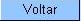

Atualizar
Cliente - Aba Pessoa
Esta tela
faz parte do processo "Manter Cliente", e permite que
você
atualize as informações do cliente.
O campo código do cliente não
pode ser alterado, porque é a chave de
identificação dcliente.
Verifique se você
selecionou o cliente
correto e, em caso afirmativo, dê continuidade ao processo de
alteração.
Se você selecionou o
cliente errado, neste caso deverá voltar
para a tela
anterior, ou para a tela de filtro, para selecionar o
cliente correto;
O sistema
apresenta os campos do cliente preenchidos com as
informações existentes no banco de dados.
Efetue as alterações que desejar, e clique no
botão  , para solicitar ao sistema a
atualização das informações
na base de dados.
, para solicitar ao sistema a
atualização das informações
na base de dados.
Em
função da quantidade de
informações a serem atualizadas, a tela foi
dividida em quatro abas:
- Nome e Tipo:
Para
identificação do cliente
- Pessoa:
Para
preenchimento das informações relacionadas com o
tipo da pessoa (Física ou Jurídica)
- Endereço:
Para informar os endereços do cliente
- Telefone:
Para
informar os telefones do cliente
As telas do
tipo aba têm um comportamento padrão. Clique aqui
para obter uma explicação mais
detalhada do
funcionamento das telas do tipo aba.
Agora, nós vamos
ver a ajuda para a aba "Pessoa".
Para ter acesso à
ajuda das demais abas, clique no "link"
correspondente, na sessão "Tópicos
Relacionados".
Preenchimento
dos campos
A
aba "Pessoa" tem uma caracterísca diferente das demais abas.
Ela terá uma formatação diferente,
dependendo do tipo do cliente.
Em
função
do tipo do cliente informado na aba anterior (Nome e
Tipo), é que o sistema irá formatar a
aba "Pessoa", entre as opções: Pessoa
Jurídica
ou Pessoa
Física.
Se
for um
cliente do tipo
Pessoa Jurídica a tela será formatada com
os campos relacionados abaixo.
-
CNPJ:
Informe o
número do CNPJ do cliente. O sistema
irá verificar se o número é
valido.
-
Ramo de
Atividade:
Selecione, na
lista apresentada, o ramo da atividade do cliente que você
está inserindo.
-
Cliente
Responsável Superior: Informe o
código de um cliente do tipo pessoa jurídica,
existente na base de dados, e tecle "Enter", ou
clique no botão
"Pesquisar"  , que fica ao lado do
campo. Neste caso
será apresentada uma tela de "popup",
onde será possível efetuar a pesquisa dos
clientes responsáveis. Após a
informação do código de um cliente
existente, ou da seleção de um cliente na
tela de pesquisa, o sistema apresentará o nome do cliente
no campo correspondente. Para obter ajuda sobre a funcionalidade
"Pesquisar Responsável", clique aqui.
, que fica ao lado do
campo. Neste caso
será apresentada uma tela de "popup",
onde será possível efetuar a pesquisa dos
clientes responsáveis. Após a
informação do código de um cliente
existente, ou da seleção de um cliente na
tela de pesquisa, o sistema apresentará o nome do cliente
no campo correspondente. Para obter ajuda sobre a funcionalidade
"Pesquisar Responsável", clique aqui.
Entretanto, se for um
cliente do
tipo Pessoa Física a tela será formatada com
os campos relacionados abaixo.
-
CPF:
Informe o
número do CPF do cliente. O sistema
irá verificar se o número é
valido.
-
RG:
Este campo
é
composto pelos campos relacionados abaixo. Ao informar um dos campos
que compõem o RG, os demais, obrigatoriamente,
deverão ser informados.
- Número
do RG: Informe o número do CPF do cliente. O
sistema irá verificar se o número informado
é válido.
- Data
de Emissão: Informe a data de
emissão do RG, ou clique no botão do
calendário
 , para selecionar a
data a partir do calendário.
, para selecionar a
data a partir do calendário.
- Ao digitar a data
não é necessário informar as barras,
pois o sistema as coloca automaticamente.
- A data de
emissão do RG não pode ser superior à
data corrente, nem inferior à data de nascimento, caso este
campo tenha sido informado.
- Clique aqui
para obter a ajuda da tela do calendário, que é
acionada ao se clicar no campo correspondente.
- Órgão
Expedidor: Selecione o órgão
expedidor do RG, entre as opções apresentadas na
lista associada ao campo.
- Estado: Selecione
estado da federação que emitiu o RG, entre as
opções apresentadas na lista associada ao campo.
- Data
de Nascimento: Informe a data de nascimento do cliente, ou
clique no botão do calendário ,
para selecionar a data a partir do calendário.
- Ao
digitar a data não é necessário
informar as barras, pois o sistema as coloca automaticamente.
- A data
de nascimento não pode ser superior à data
corrente, nem à data de emissão do RG, caso este
campo tenha
sido informado.
- Clique aqui
para obter a ajuda da tela do calendário, que é
acionada ao se clicar no campo correspondente.
- Profissão:
Selecione a profissão, entre as profissões
apresentadas na lista.
- Sexo:
Selecione o
sexo do cliente entre as opções apresentadas na
lista associada ao campo.
Caso você retorne para
a aba
anterior (Nome e Tipo) e modifique o tipo do cliente, modificando,
também, o tipo da pessoa; o sistema irá
apresentar uma tela,
comunicando a perda das informações para o tipo
antigo e solicitando a
confirmação da operação.
Confirmando a operação o sistema irá
desprezar
as informações anteriores e formatar a tela com
os campos do novo tipo
em branco.
Observação:
Os campos
obrigatórios estão marcados um um asterisco
vermelho (*)
Funcionalidade
dos botões:
As telas do tipo aba
apresentam dois tipos de
botões, que estão separados por uma linha
horizontal no final das telas.
Os botões que
estão acima da linha horizontal,
estão relacionados com a navegação
entre as abas, e, os botões que estão
abaixo da linha horizontal, têm efeito sobre todas as abas.
|
Botão
|
Descrição
|
|
Este botão
permite ao usuário visualizar um resumo
dos dados do cliente que esta sendo atualizado. Basta posicionar o
"mouse" sobre o botão, que o sistema apresentará a janela com
o resumo. |
|
Estando
com a aba
formatada para Pessoa Jurídica, este botão
será
apresentado para acionar a funcionalidade "Pesquisar
Responsável"
|
 |
Clique
neste botão para efetuar a limpeza do campo correspondente. |
|
Estando
na aba formatada
para Pessoa Física, ao acionar este botão, o
sistema
íra abrir uma tela para que você selecione a data
a partir
do calendário. Clique aqui
para obter a ajuda da tela do calendário. |
  |
Estes
botões estão na parte superior da linha
horizontal, e devem ser utilizados para que o sistema retorne para a
aba anterior. |
  |
Estes
botões estão na parte superior da linha
horizontal, e devem ser utilizados para que o sistema avance para a
próxima aba. Antes de passar para a próxima aba o
sistema irá verificar se existe alguma
inconsistência na aba atual. No caso de haver alguma
inconsistência, o sistema apresentará a mensagem
de crítica correspondente e não
avançará para a próxima aba. |
|
Utilize
este botão
para solicitar ao sistema a atualização
do cliente
na
base de
dados. Neste caso, é necessário que todos os
campos, de todas as abas,
estejam preenchidos corretamente. Caso exista alguma
inconsistência, o sistema emitirá a mensagem de
crítica correspondente. |
 |
Utilize
este botão para fazer com que a tela volte ao seu estado
inicial de exibição. Ao clicar neste
botão o
sistema limpará todos os campos informados até o
momento,
e posicionará na aba "Nome e Tipo". |
 |
Utilize
este
botão para fazer com que o sistema encerre, sem salvar, o
que
está sendo feito, e volte para a tela principal. |
|  |
Este
botão, que fica abaixo da linha horizontal, tem como
objetivo sair da tela de abas e voltar para a tela anterior. Dependendo do
caso será a
tela "Manter Cliente" ou a tela "Filtrar Cliente". |
Tela
de Sucesso:
A tela de sucesso
será apresentada
após clicar no botão
"Concluir", e não houver nenhuma
inconsistência no conteúdo dos campos de todas as
abas do processo "Manter Cliente".
O sistema apresentará a mensagem abaixo,
quando a atualização do cliente tiver sido realizada com
sucesso.
"Cliente de
código
<<código
do cliente>> atualizado com sucesso."
O sistema
apresentará duas
opções após a
atualização do cliente. Escolha a
opção desejada clicando em
algum dos "links" existentes na
tela de sucesso:
- Menu
Principal --> Para voltar à tela principal
do sistema.
- Realizar outra manutenção de cliente
--> Para efetuar a atualização de um outro
cliente.
Tópicos
Relacionados: